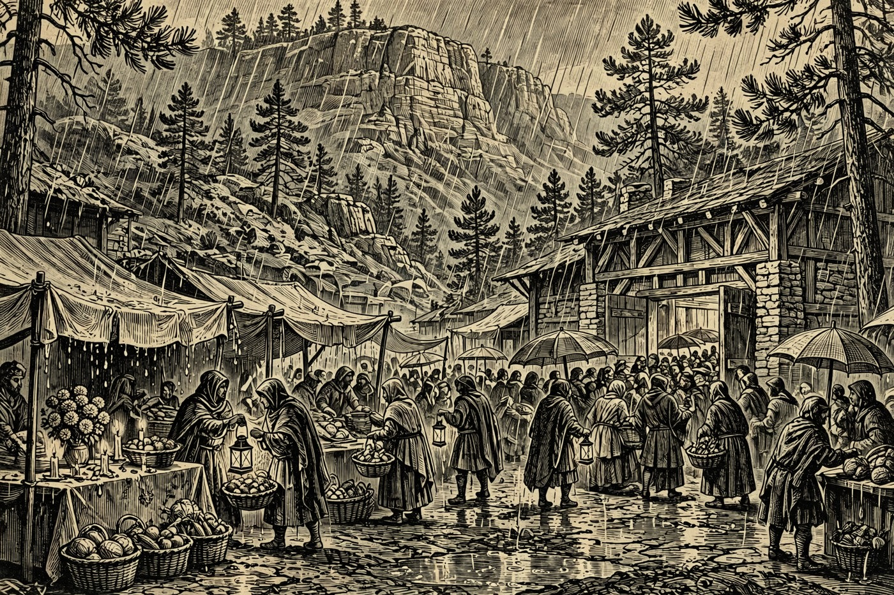

PAYSON — Hail, guest of the Hearth, and shake the rain from your cloak by the door! Sundas comes in wet over the Rim — hard rain, a high of 57 and a low of 47, and a 100% chance of rain — and still the Holds are full of doings: Payson’s own TJ Maxx throws open its doors for its grand opening today at 400 E State Hwy 260, Sedona’s farmers market opens its winter season late this morning, and Prescott dances to flamenco guitars this afternoon. One sad note — Tlaquepaque’s Day of the Dead celebration in Sedona has been called off for the storm. By the Nine, keep your lantern lit and your cloak dry.
Happening in the Holds Today
 Payson— TJ Maxx Grand Opening, 8:00 AM–8:00 PM at 400 E State Hwy 260, Payson. A brand-new market hall for the Hold opens its doors today: the off-price favorite’s first day in Payson, with grand opening hours running the full day. Expect racks of clothing, home goods, and treasure-hunt bargains, and a crowd of neighbors doing the same happy hunting. Valley Dwellers are already trading the lowland heat for Rim Country air — and today, for first pick of the shelves. Go early for the best of it, and bring a cloak for the rain between the door and the cart.
Payson— TJ Maxx Grand Opening, 8:00 AM–8:00 PM at 400 E State Hwy 260, Payson. A brand-new market hall for the Hold opens its doors today: the off-price favorite’s first day in Payson, with grand opening hours running the full day. Expect racks of clothing, home goods, and treasure-hunt bargains, and a crowd of neighbors doing the same happy hunting. Valley Dwellers are already trading the lowland heat for Rim Country air — and today, for first pick of the shelves. Go early for the best of it, and bring a cloak for the rain between the door and the cart. Sedona— Sedona Community Farmers Market — Winter Season Opens, 11:00 AM–3:00 PM at the Wells Fargo Bank lot, 2201 W SR 89A, Sedona. The market’s winter season starts today, with later hours than summer: local growers, bakers, and makers set out fresh produce, baked goods, jams, and Rim Country flavor in every stall. Everything sold here is grown by the farmers themselves — no reselling — so what you carry home is the real harvest. A gentle late-morning outing, rain and all, with the red rocks standing guard. Come hungry and leave with a full basket.— Day of the Dead at Tlaquepaque — Called Off for the Weather. A sad note, travelers: Tlaquepaque’s Día de los Muertos celebration, planned for today at 336 State Route 179 in Sedona, has been canceled because of the storm — the village’s own page says so in plain words. The altars, marigolds, and music will have to wait for next year. If your heart was set on honoring the day, light a candle at the Hearth tonight and raise a mug to those who have gone before. The bards will sing the celebration back next autumn.
Sedona— Sedona Community Farmers Market — Winter Season Opens, 11:00 AM–3:00 PM at the Wells Fargo Bank lot, 2201 W SR 89A, Sedona. The market’s winter season starts today, with later hours than summer: local growers, bakers, and makers set out fresh produce, baked goods, jams, and Rim Country flavor in every stall. Everything sold here is grown by the farmers themselves — no reselling — so what you carry home is the real harvest. A gentle late-morning outing, rain and all, with the red rocks standing guard. Come hungry and leave with a full basket.— Day of the Dead at Tlaquepaque — Called Off for the Weather. A sad note, travelers: Tlaquepaque’s Día de los Muertos celebration, planned for today at 336 State Route 179 in Sedona, has been canceled because of the storm — the village’s own page says so in plain words. The altars, marigolds, and music will have to wait for next year. If your heart was set on honoring the day, light a candle at the Hearth tonight and raise a mug to those who have gone before. The bards will sing the celebration back next autumn. Prescott— Tierra Flamenca: Guitar, Dance, and Classical Roots, 3:00 PM at Ruth Street Community Theater in Prescott, tickets $28–$69. Lena Jácome dances and Chris Jácome plays, with Arizona Philharmonic strings behind them — heels striking the stage and guitar carrying the hall. A rich, warm afternoon of music to close a wet weekend, and well worth the drive over the hill. The theater crowd dresses a little fine for this one. Book ahead; seats in a hall this size go quickly.— Whole Food Plant Based Cooking Class, 1:00 PM at Prescott Seventh Day Adventist Church, Prescott. A hands-on afternoon of plant-based cooking — recipes, tastings, and kitchen wisdom for anyone curious about eating more from the garden and less from the packet. Friendly instruction and plenty of samples make it a fine rainy-day outing. Newcomers are welcome; no experience with a skillet is required. Bring your appetite and your questions.
Prescott— Tierra Flamenca: Guitar, Dance, and Classical Roots, 3:00 PM at Ruth Street Community Theater in Prescott, tickets $28–$69. Lena Jácome dances and Chris Jácome plays, with Arizona Philharmonic strings behind them — heels striking the stage and guitar carrying the hall. A rich, warm afternoon of music to close a wet weekend, and well worth the drive over the hill. The theater crowd dresses a little fine for this one. Book ahead; seats in a hall this size go quickly.— Whole Food Plant Based Cooking Class, 1:00 PM at Prescott Seventh Day Adventist Church, Prescott. A hands-on afternoon of plant-based cooking — recipes, tastings, and kitchen wisdom for anyone curious about eating more from the garden and less from the packet. Friendly instruction and plenty of samples make it a fine rainy-day outing. Newcomers are welcome; no experience with a skillet is required. Bring your appetite and your questions.
The Days Ahead
- Mon, Nov. 2— Prescott Farmers Market, 9:00 AM–1:00 PM at Yavapai College, 1100 E Sheldon St., Prescott. Dozens of growers and makers with fresh produce, baked goods, local honey, and ready-to-eat food, plus live entertainment — the region’s oldest farmers market, running since 1997. Free entry, SNAP and EBT welcome, and FMNP coupons accepted. A cheerful Monday-morning provision run for any guest’s kitchen. Go early for the best of the bread and greens.
- Tue, Nov. 3— Trail Day Volunteer Build in Pine, 7:00 AM–12:00 PM off Highway 87 just before Pine. Pine Strawberry Fuel Reduction invites hikers, bikers, runners, and neighbors to clear brush, move rocks, and shape trails that will serve the Hold for years — and give fire crews better access when it matters. Tools are provided; bring water, gloves if you have them, and sturdy shoes. To volunteer, email trails@psfuelreduction.org for directions and details. Good work, good company, and a trail to be proud of.— Snakes! Lizards! Tortoises!, 11:00 AM at 336 AZ-179, Sedona. A close-up morning with the desert’s scaly neighbors — the kind of talk where the creatures are the teachers and every kid in the room leans in. Fine family fare for a school-day adventure, with handlers who know their beasts and love questions. Come with curiosity; leave with respect for the wildlife under the Rim. Arrive early — the front rows fill with small naturalists fast.
- Wed, Nov. 4— Wildflower Walk, 10:00 AM–12:00 PM at the Highlands Center for Natural History, 1375 S. Walker Rd., Prescott. A guided walk through Lynx Creek’s highland trails to see what still blooms along the creek this late in the season, led by center naturalists who know every plant by name. Free, but an RSVP is required — sign up on the center’s calendar page. Easy walking and good company in the pines. Dress for the weather and bring your curiosity.
- Fri, Nov. 6— Sedona Mountain Bike Festival opens at 9:00 AM at Posse Grounds, 525 Posse Grounds Rd., Sedona. Three days of red-rock riding begin: demo bikes, group rides, shuttled runs, gear vendors, food trucks, and a festival crowd of riders from every Hold and beyond. Even non-riders will enjoy the spectacle, the bands, and the food. The Rim’s trails show off their best this weekend. If you ride, bring your legs; if you watch, bring a chair.— Small Works Show opening reception, 4:00–7:00 PM at Mountain Trails Gallery in Tlaquepaque, Sedona. The gallery’s popular Small Works show opens with new pieces by Arizona artist Greg Heil and others, with animal artist Sarah Webber in attendance. Small pieces, big country — a fine First Friday evening among the galleries. The show runs through the holidays, so a gift hunt can start right here. Wine, art, and good talk in a beautiful courtyard setting.— Anthony Mazzella — Legends of Guitar, 7:00 PM at the Prescott Elks Theater. A night of guitar legends’ music played by a master of the instrument, in one of the prettiest old theaters in the territory. Expect the great riffs and melodies every traveler knows, played up close in a room built for sound. A strong close to the week’s doings. Seats in historic halls go fast — plan ahead and dress for an evening out.
- Sat, Nov. 7— Hike for Hounds Fall Festival, 9:00 AM in Prescott. A fall morning where the dogs are the guests of honor — a group hike and festival fun with four-legged companions leading the way. Expect wagging tails, happy chaos, and a crowd that takes pup pageantry seriously. A grand outing for anyone traveling with a hound. Bring water for both ends of the leash.